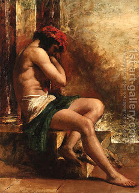

Sanhedrin 84 - Who is Strangled
The complete procedure for strangulation was described earlier .
The following are executed by strangulation: one who strikes his father or his mother and inflicts a wound; one who kidnaps a Jewish person, works him, then sells him as a slave; a sage who rebels against the word of the High Court; a false prophet; one who prophesies in the name of a false god; one who commits adultery; false witnesses against a daughter of a Kohen; and a man who illicitly cohabited with the daughter of a Kohen.
Even though the witnesses have tried to impose the punishment of burning on the daughter of a Kohen, when they are disqualified as false witnesses, they receive the punishment appropriate for the adulterer, and not the adulteress, because of "... as he conspired to do to his brother ."
Art: William Etty - The slave